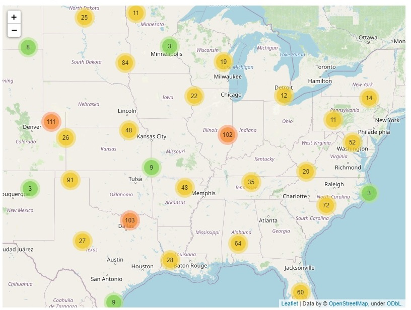
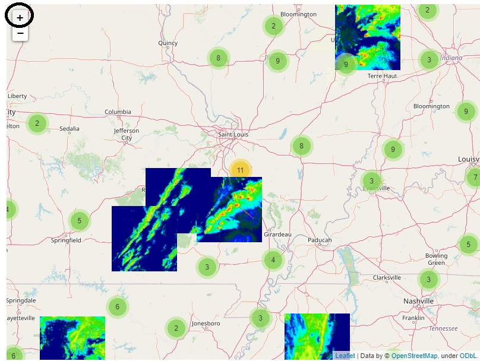
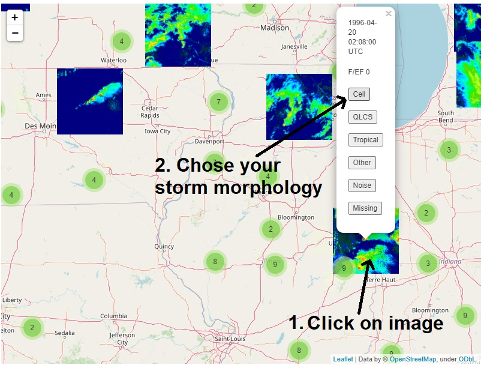
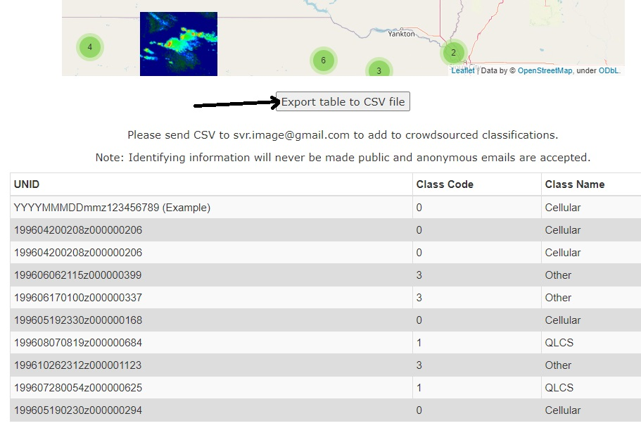

Storm Morphology
Weather radar data have been used for many years to identify storm morphology. Historical weather radar data basically tell us how hard it rained at a certain time and place. Scientists noted that the detected rainfall formed repeated patterns depending on atmospheric conditions. Further work in the 1980s to present has greatly improved our understanding of the time and place that certain patterns (storm morphology) appear. Identification of storm morphology can help assess the potential severity of an ongoing or imminent severe weather event, as some storm morphologies are associated with certain types of atmospheric hazards. The automated identification of storm morphology is a relatively new "frontier" in atmospheric and climate science, and is becoming more and more needed due to the increasing size of observational and simulated datasets. Applications of an automated storm morphology identification approach include improving the situational awareness for operational meteorologists, informing forecasters of potential storm modes within many model outputs (ensembles), and testing whether or not storm morphology may change in future climates.
A major hurdle for automated approaches is the training and validation of machine learning models. These models use massive amounts of data to find patterns that can be used to make predictions or classifications. Image classification models, such as convolutional neural networks, need even more data than "traditional" machine learning approaches. Datasets such as MNIST and CIFAR are used to train these models, and contain 10s of thousands of images. At the moment, there is no comparable dataset for storm morphology.
That's where you come in! There is a phrase: "many hands make light work". This also applies to generating machine learning datasets. If hundreds of people classify hundreds of images, we can easily create a dataset of 10s of thousands of images. The process is similar to playing a video game on your phone and interesting because you learn about historical tornado events. After accessing the map on the website, you can explore different tornado report locations and see what the radar image looked like at the time the tornado touched down. You will see various images when you interact with the website. Here are a few things that you might see:
Cellular Storm Morphology
Look for circular areas of red and orange near the center of the image.


QLCS Storm Morphology
Look for continuous red and orange lines that intersect the center of the image.


Tropical Storm Morphology
Look for green and yellow lines that appear to circle around the bottom or left edge of the image.


Other Storm Morphology
If you can't decide, thats okay! Not everything is black or white.


Noise
Radar data can have a lot of noise in them. These are unnatural and not related to rainfall.


Missing
The entire image or most of the image is blue. The rainfall data are missing here.


Step 1 - Open the mapping website and wait for it to load
Step 2 - Forward scroll or press the + button to zoom in to a location of interest
Step 3 - Click on an image and select a storm morphology
Step 4 - When you decide to stop, click on Export Table to CSV
Step 5 - Email the csv file to svr.image@gmail.com
Try it yourself!